Caio Lamego
Diário de Bordo – Caio Lamego
Sprint 0
Resumo da Sprint
Nesta sprint inicial, o foco principal foi estabelecer a comunicação com a comunidade KDE, compreender as políticas do projeto e superar a complexidade de configurar o ambiente local. Diferente de softwares tradicionais, o projeto escolhido (KDE Linux) é um sistema operacional imutável em desenvolvimento ativo ("cutting-edge immutable OS"). O esforço técnico principal concentrou-se na criação de uma Máquina Virtual no Linux hospedeiro e no mapeamento de melhorias (Issues) para as próximas etapas.
Atividades Realizadas
| Data | Atividade | Tipo | Status |
|---|---|---|---|
| 16/04/2026 | Abertura do repositório de documentação | Configuração | Concluído |
| 17/04/2026 | Leitura do Código de Conduta e políticas da comunidade | Estudo | Concluído |
| 17/04/2026 | Apresentação na comunidade (#new-contributors) no Matrix | Discussão | Concluído |
| 17/04/2026 | Busca no repositório (GitLab CI/CD) para baixar a imagem do SO | Estudo | Concluído |
| 18/04/2026 | Configuração de firmware e ambiente via virt-manager |
Configuração | Concluído |
| 19/04/2026 | Mapeamento de tarefas (Filtro por Issues Newcomer) |
Estudo | Concluído |
Maiores Avanços
-
Integração com a Comunidade: Entendi que a comunidade KDE utiliza o Matrix para comunicação em tempo real e o ambiente Invent (GitLab) para o rastreamento do código e tarefas. Me apresentei formalmente na sala
#new-contributors:kde.org.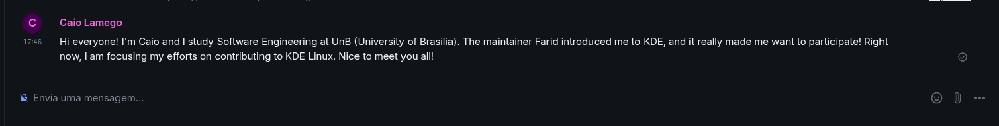
-
Ambiente de Desenvolvimento de Pé: Consegui configurar a máquina virtual no
virt-managerutilizando os parâmetros exigidos (4 CPUs e 4096 MB de RAM). Importei o artefato de compilação da imagem e consegui instalar o KDE Linux no disco secundário formatado (vdb - 20 GiB). O sistema está rodando localmente de forma isolada!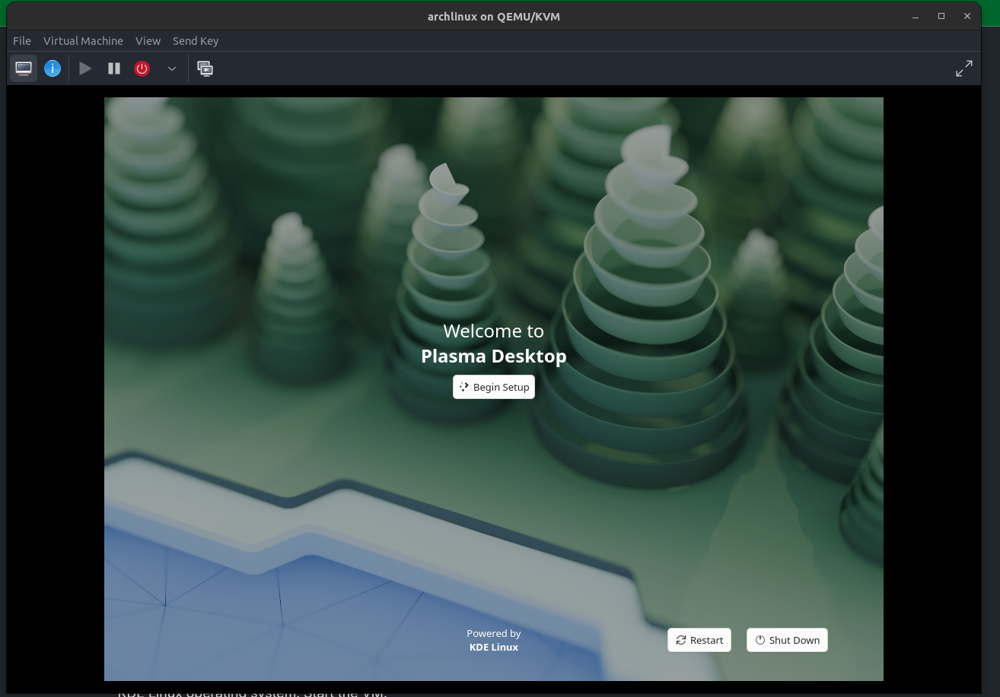
Maiores Dificuldades
- Mudança de Paradigma no Ambiente de Testes e Build: Tive uma grande dificuldade inicial para compreender a arquitetura do ambiente local e como os meus testes de código seriam realizados na prática. Em projetos convencionais (como aplicações web abordadas em outros semestres), o padrão é clonar o código, instalar dependências e "subir" o ambiente compilando tudo no próprio terminal do hospedeiro (usando ferramentas como Docker, Node, etc.). No KDE Linux, por se tratar de um Sistema Operacional Imutável inteiro, o fluxo é radicalmente diferente. Demorei a entender que eu não devo compilar o código localmente. O ambiente de desenvolvimento em si é a Máquina Virtual rodando o arquivo
.raw; as alterações que eu fizer no código do meu fork serão enviadas e construídas (build) pelos servidores do GitLab através de pipelines de CI/CD. A VM atua apenas como o laboratório final de testes, o que exigiu uma forte quebra de expectativa sobre o que significa "configurar o ambiente local" em projetos de sistemas operacionais.
Lições Aprendidas
- Cultura de Contribuição: Entendi a fundo os pilares do Código de Conduta do KDE, especialmente os de pragmatismo e colaboração mútua ("Be collaborative", "Be pragmatic"). Seguir as diretrizes oficiais e se comunicar ativamente é a chave.
- Atenção Estrita à Documentação: Seguir passo a passo a documentação oficial (quando existente) é crucial para evitar erros críticos de setup. Existem erros já previstos na documentação, e isso é importante para saber que tipo de problemas podem surgir e como resolvê-los, e entender que o build do ambiente não saiu do controle.
- Curadoria de Tarefas: Aprendi que ter a tag de bug não significa que a tarefa está pronta para desenvolvimento. É crucial evitar Issues marcadas como
Upstream issue(ex: Issue #448 ou a #589 sobre Kernel Panic) pois estas dependem de alterações em repositórios de terceiros. Além disso conheci as tagsNewcomereGood First Issue, que são indicativos de tarefas mais acessíveis para novos contribuidores.
Mapeamento das Políticas de Contribuição e Qualidade
Diferente de repositórios comerciais no GitHub, o ecossistema do KDE possui uma estrutura descentralizada de ferramentas e políticas, gerida através de sua própria infraestrutura:
- Gestão de Código e Revisão (KDE Invent): O projeto não utiliza GitHub nem a nomenclatura de Pull Requests (PRs). Todo o controle de versão, submissão de código e revisão peer-to-peer (desenvolvedor para desenvolvedor) ocorre no KDE Invent, uma instância do GitLab. As submissões de código são feitas através de Merge Requests (MRs).
- Separação de Issues e Bugs: O rastreamento de problemas é categorizado. Tarefas de desenvolvimento, planejamento e good-first-issues (Newcomers) ficam no painel de Work items do GitLab. No entanto, relatos de falhas pelos usuários são gerenciados separadamente através do KDE Bugzilla (KDE Bugtracker).
- Política de Nomenclatura e Pragmatismo: Em vez de ditar regras estritas e burocráticas sobre prefixos de branches (como
feat/,bugfix/), a política do KDE baseia-se no seu Código de Conduta, exigindo um desenvolvimento pragmático e colaborativo. A regra de ouro descrita na wiki oficial é a transparência: o contribuidor deve usar os canais de comunicação (Matrix ou comentários nas Issues do Invent) para discutir a implementação e avisar a comunidade antes de submeter um MR pesado.
Mapeamento de Issues
- Acessamos o painel de Work Items no Invent (GitLab) e utilizamos os filtros
Label is NewcomereState is Openpara encontrar tarefas voltadas para novos desenvolvedores.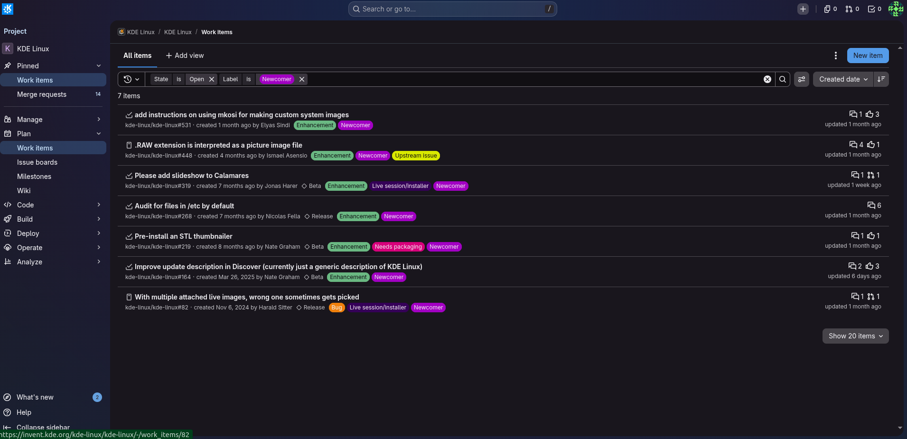
- Mapeamento das seguintes Issues com alto potencial para a nossa primeira contribuição:
- Issue #164: Melhorar a descrição de atualização no aplicativo Discover (Atualmente exibe um texto muito genérico do KDE Linux).
- Issue #319: Adicionar um slideshow de imagens no momento da instalação do sistema usando o Calamares.
- Issue #531: Adicionar instruções na documentação sobre como usar o
mkosipara criar imagens customizadas.
Plano Pessoal para a Próxima Sprint
- [ ] Escolher ativamente uma das Issues mapeadas acima e solicitar a atribuição (assign) no GitLab.
- [ ] Mapear a arquitetura e estudar o codebase específico da Issue escolhida no repositório.
- [x] Realizar alterações no meu repositório (fork) e rodar testes na Máquina Virtual.
- [x] Abrir o primeiro Pull Request / Merge Request.
Sprint 1 - 27/04/2026 - 04/05/2026
Resumo da Sprint
Nesta sprint, o foco absoluto foi realizar a primeira contribuição real para o repositório do projeto. No entanto, houve altíssima concorrência: as poucas issues ativas com a tag Newcomer já tinham sido escolhidas por outros membros da comunidade ou por colegas da nossa equipe (como a Issue #164, a #319, a #219 e a #531). Para não travar meu desenvolvimento, comparei a documentação oficial da Wiki e o README.md principal do repositório. Criei uma nova Issue apontando uma falta de informação sobre o onboarding e resolvi através de um Merge Request, respeitando as políticas da comunidade.
| Data | Atividade | Tipo (Código/Doc/Discussão) | Status |
|---|---|---|---|
| 03/05/2026 | Comunicação prévia com a comunidade no Matrix | Discussão | Concluído |
| 03/05/2026 | Criação de nova Issue no Invent sobre onboarding de VMs | Doc/Gestão | Concluído |
| 03/05/2026 | Inserção da seção "Test it in a Virtual Machine" no README.md |
Código/Doc | Concluído |
| 03/05/2026 | Abertura do meu Primeiro Merge Request (MR) | Código | Concluído |
| 04/05/2026 | MR aceito e merge concluído | Código | Concluído |
Maiores Avanços
- Etiqueta Open Source e Comunicação: Antes de simplesmente abrir a Issue, apliquei os princípios de "Be collaborative" e "Be pragmatic" do Código de Conduta do KDE. Fui até o canal oficial no Matrix e avisei os mantenedores previamente sobre a minha intenção de alterar o
README.md, respeitando o aviso do repositório que pede aos usuários para consultarem a comunidade antes de reportarem issues.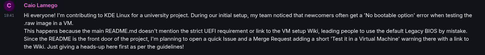
- Senso Crítico e Auditoria (A identificação do gargalo): Ao realizar uma revisão na Wiki oficial do KDE, notei que pudesse ser necessária uma Issue: Quando um desenvolvedor entra no repositório de código do KDE Linux, a primeira coisa que ele vê é o arquivo
README.md. Atualmente, ele não possui nenhum alerta sobre o UEFI e não guia o desenvolvedor de forma clara para ler a página da Wiki. O desenvolvedor acaba tentando montar a Máquina Virtual de forma intuitiva, usa o BIOS antigo por padrão, e o sistema quebra.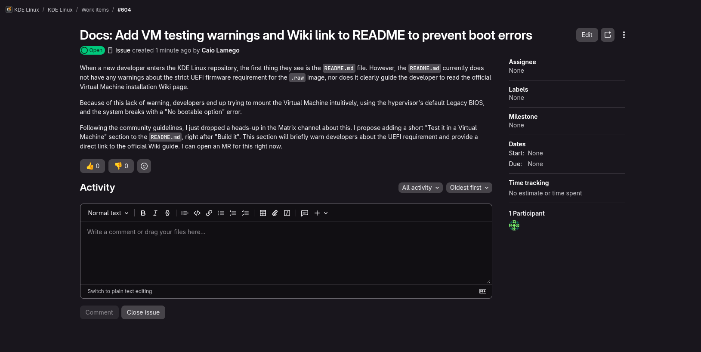
-
Primeira Contribuição: Contribuição para a comunidade solucionando essa falha apontada acima. Inseri a seção
Test it in a Virtual MachinenoREADME.mdalertando sobre o UEFI e submeti meu primeiro Merge Request.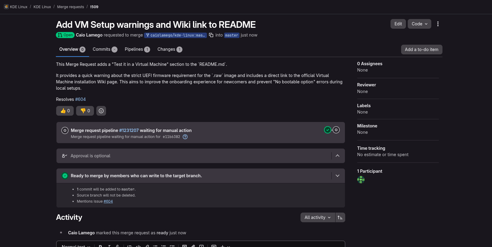
-
MR aprovado: O Merge Request foi aprovado pelos mantenedores do KDE e integrado ao código principal, dessa forma atualizando a documentação do projeto.
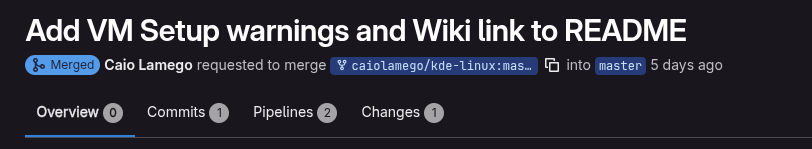
Maiores Dificuldades
- Concorrência Agressiva por Issues: A maior dificuldade da sprint foi a alta de tarefas, por serem poucas de newcomers e por estarem sendo disputadas por diversos membros da comunidade. A maioria das Issues mais acessíveis já estavam atribuídas, o que me forçou a criar minha própria Issue.
Aprendizados
- A Importância da Transparência: Aprendi que, no Open Source, o processo de comunicação (avisar no Matrix, justificar a Issue) é tão importante quanto o código em si. Respeitar as regras de governança do repositório abre portas mais facilmente.
- A Importância do README: Compreendi que ter uma boa documentação na Wiki não basta se o arquivo raiz do repositório não conduzir ativamente os novos contribuidores até ela e não fizer alertas de infraestrutura para os ambientes locais de build e teste.
Plano Pessoal para a Próxima Sprint
- [x] Acompanhar a revisão (Code Review) do meu Merge Request pelos mantenedores do KDE.
- [ ] Começar a contribuir em novas Issues, além de Newcomer, para ganhar mais experiência com o código.
- [ ] Estudar o codebase com maior antecedência para a Sprint 2, buscando atuar ativamente em issues de código.
Sprint 2
Resumo da Sprint
Nesta sprint, o objetivo foi aprofundar a contribuição no ecossistema do KDE Linux, focando em tarefas de configuração, integração e infraestrutura. O processo foi marcado por intensa comunicação com os mantenedores oficiais, exigindo adaptações rápidas (pivôs) no plano de ação original devido à altíssima concorrência. Tentei assumir múltiplas tarefas (Issues #586, #578 e #21), vivenciando na prática os desafios de governança, concorrência interna da equipe, dependências de roadmap e alocação de tarefas distribuídas em um projeto Open Source em fase Beta.
Planejamento Inicial e Escolha da Issue #586
A primeira tarefa selecionada para a Sprint 2 foi a Issue #586: "Add a /etc/motd on the base OS explaining that most stuff is in Kapsule". A tarefa consistia em adicionar um banner de terminal (Message of the Day) na imagem base do sistema operacional, instruindo novos usuários sobre a natureza imutável do SO e direcionando-os ao uso do contêiner Kapsule.
Essa issue foi escolhida por ter um alto impacto na Experiência do Desenvolvedor (DevEx) e estar alinhada com o escopo de configuração de pacotes e infraestrutura.
Comunicação e Etiqueta Open Source (Matrix e GitLab)
Seguindo o Código de Conduta do KDE, antes de submeter qualquer código, iniciei o processo de comunicação.
Fui ao canal oficial do projeto no Matrix (#kde-linux:kde.org) para avisar a comunidade sobre a minha intenção de assumir a tarefa e pedi direcionamento técnico sobre onde os arquivos do /etc/ eram populados durante o build (mkosi).
Em seguida, registrei formalmente o meu interesse comentando na própria Issue no GitLab.
Colaboração, Mentoria e Gerenciamento de Dependências
A resposta da comunidade foi extremamente rápida, resultando em duas interações cruciais com os mantenedores principais do KDE Linux:
A. Mentoria Técnica: O desenvolvedor Hadi Chokr respondeu ao meu comentário quase imediatamente, indicando o caminho exato para a injeção de arquivos: "They are defined in the mkosi.extra folder". Isso demonstrou a alta colaboração da comunidade.
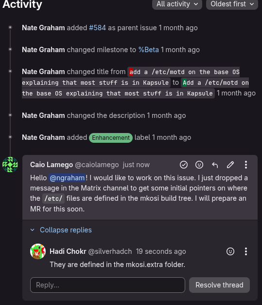
B. Bloqueio por Dependência de Roadmap: Logo após eu iniciar a estruturação do código, o mantenedor líder (Nate Graham) interveio avisando que a Issue #586 era prematura. Ele explicou que a tarefa dependia da conclusão prévia da Issue #584 (Full Kapsule integration) [1] e que fazer o Merge Request agora direcionaria os usuários para um "canteiro de obras".
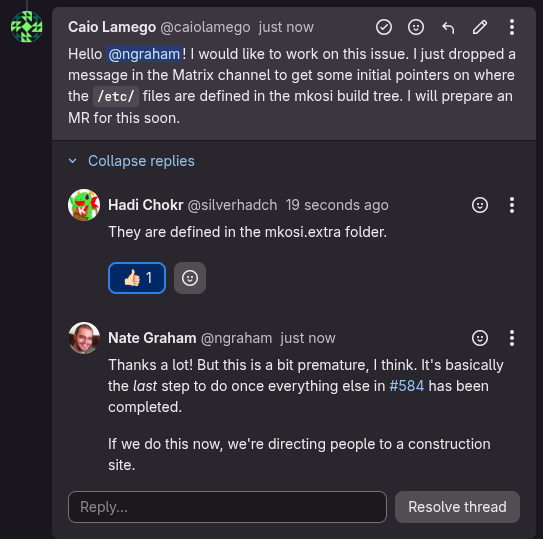
Ação Tomada: Entendendo os princípios de evolução de software e dependências de features, concordei com o mantenedor, cancelei a alteração no código para evitar conflitos na base principal e me retirei da tarefa.
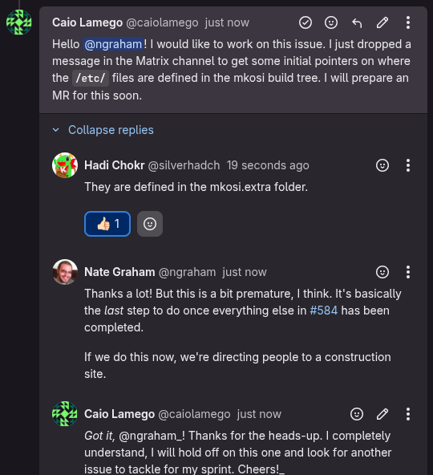
Tentativas de novas issues e alta concorrência (Issues #578 e #21)
Com a paralisação da #586, iniciei uma busca por novas opções de contribuição, focando em CI/CD:
1. Issue #578 ("On-demand CI job to delete the latest build"): Escolhi esta tarefa por envolver a manipulação de jobs sob demanda no pipeline. Contudo, rapidamente descobri que ela já havia sido assumida por outro mantenedor, o que inviabilizou minha atuação.
2. Issue #21 ("Loud notification on nightly build failure" - kde-linux-packages): Encontrei esta issue com a tag Newcomer. Ao demonstrar interesse, o mantenedor Nate Graham me respondeu explicando que essa tarefa era a "outra metade" da Issue #579 (do repositório principal). Mais uma vez não foi possível realizar uma issue que teoricamente estava livre para desenvolver, mesmo com a tag de Newcomer.
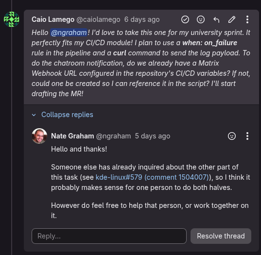
Maiores Avanços
- Gerenciamento de Dependências e Governança: Consegui vivenciar o fluxo real de uma feature sendo bloqueada pelo roadmap do projeto. A Issue #586 exigia adicionar um aviso no
/etc/motdsobre o Kapsule, mas o mantenedor Nate Graham interveio para informar que a integração do Kapsule (Issue #584) não estava pronta. - Mentoria e Código de Conduta: A comunicação no Matrix antes de codificar funcionou perfeitamente. O desenvolvedor Hadi Chokr me respondeu quase imediatamente no GitLab, orientando que a injeção de arquivos ocorria na pasta
mkosi.extra, poupando horas de busca na arquitetura do sistema.
Maiores Dificuldades
- Bloqueio de Tarefa no Meio da Execução: A paralisação da Issue #586 logo após o início do trabalho me forçou a reorganizar a sprint de última hora e a justificar de forma profissional minha saída da tarefa.
- Concorrência por Issues Newcomer: A tentativa de pivotar para a Issue #579 (notificação de erro no pipeline) falhou pois a alta concorrência na comunidade e a escassez de issues com a label
Newcomerfizeram com que ela já estivesse tomada. - Compreensão de Pipelines de CI: Aprender a estrutura do
.gitlab-ci.ymldo projeto para injetar de forma segura um jobwhen: manualsem quebrar o restante da integração contínua do repositório principal exigiu grande esforço investigativo.
Aprendizados
- O Valor da Comunicação Prévia: Salvei horas de trabalho. Se eu tivesse feito o Merge Request da #586 em silêncio, ele seria rejeitado por expor uma funcionalidade incompleta.
- Ecossistema Mkosi: Mesmo não finalizando a #586, ganhei um conhecimento técnico sobre a montagem de imagens de sistemas imutáveis usando
mkosi, e como as customizações são injetadas no nível raiz através de arquivos de configuração, ao invés da compilação tradicional.
Sprint 3
Resumo da Sprint
Nesta sprint, retomei a Issue #21 do repositório kde-linux-packages, relacionada à criação de uma notificação para falhas nas compilações noturnas do KDE Linux. A tarefa foi desenvolvida em conjunto com Diego Souza: ele ficou responsável pela Issue #579 no repositório principal kde-linux, enquanto eu adaptei a mesma solução para o pipeline de construção dos pacotes.
Essa divisão foi definida após uma conversa com o mantenedor Nate Graham. Como as duas issues representavam partes do mesmo problema, trabalhamos de forma coordenada para manter a mesma arquitetura e o mesmo padrão de implementação nos dois repositórios.
Ao final da sprint, implementei a solução, realizei os testes necessários e abri o Merge Request !101 no repositório kde-linux-packages.
Links:
Atividades Realizadas
| Atividade | Tipo | Status |
|---|---|---|
| Alinhamento da implementação com Diego Souza | Discussão/Planejamento | Concluído |
Análise do .gitlab-ci.yml do kde-linux-packages |
Estudo/Código | Concluído |
Criação do script notify_matrix.sh |
Código | Concluído |
| Configuração da captura do log de compilação | CI/CD | Concluído |
Inclusão do jq como dependência do ambiente |
Configuração | Concluído |
| Testes locais do script e do payload JSON | Testes | Concluído |
| Abertura do Merge Request !101 | Código | Concluído |
Colaboração nas Issues #579 e #21
Na sprint anterior, o mantenedor Nate Graham havia informado que a Issue #21 era a outra metade da Issue #579. Posteriormente, Diego e eu comunicamos à comunidade que trabalharíamos juntos: ele implementaria a solução no repositório principal e eu faria a adaptação no repositório de pacotes.
A implementação do Diego passou por revisão dos mantenedores, que solicitaram ajustes como a inclusão dos cabeçalhos SPDX. A partir dessa revisão, utilizei a mesma arquitetura no meu código, evitando criar duas soluções diferentes para o mesmo problema.
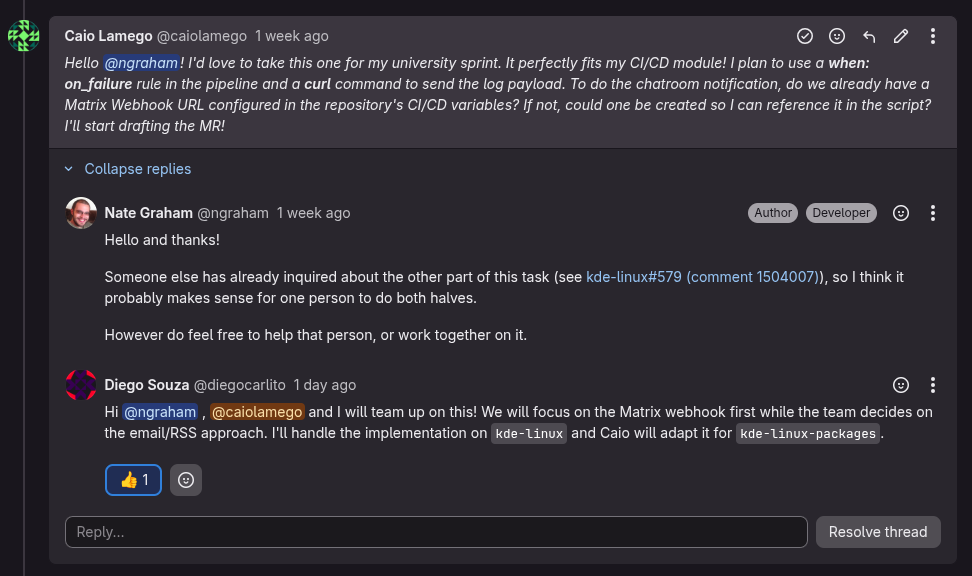
Implementação da Notificação no Matrix
Foi criado o script executável notify_matrix.sh, responsável por enviar uma mensagem para uma sala do Matrix quando o job de compilação falhar.
O script:
- verifica se a variável de CI/CD
MATRIX_WEBHOOK_URLestá configurada; - recebe o arquivo
build.log; - extrai as últimas 15 linhas do log com o comando
tail; - cria um payload JSON seguro utilizando
jq; - inclui na mensagem o nome do projeto e o link da pipeline;
- envia a notificação para o Matrix utilizando
curl.
O arquivo foi versionado com permissão de execução 100755.
Alterações no Pipeline do GitLab
Durante a análise do .gitlab-ci.yml, identifiquei que as compilações noturnas utilizavam o mesmo job build. Esse job foi ajustado para salvar as saídas e os erros no arquivo build.log sem esconder possíveis falhas do build.sh. Também foi adicionado um after_script que executa o notify_matrix.sh somente quando o job falha, enviando a notificação com as informações do erro.
Gerenciamento da Dependência jq
O script utiliza jq para gerar com segurança o JSON da notificação. Como não foi possível confirmar sua presença na imagem de CI da KDE por meio do Docker, o pacote foi adicionado ao bootstrap.sh, garantindo que a dependência seja instalada durante a preparação do ambiente.
Testes Realizados
Antes de abrir o Merge Request, realizei testes para verificar:
- a sintaxe do script com
bash -n; - a análise estática com
shellcheck; - o comportamento quando
MATRIX_WEBHOOK_URLnão está configurada; - o comportamento quando o arquivo de log não existe;
- a seleção correta das últimas 15 linhas;
- a criação de um JSON válido com caracteres especiais;
- a permissão executável do arquivo;
- a ausência de erros de formatação no diff do Git.
Também foi utilizado um servidor HTTP local para simular o webhook e inspecionar o payload enviado pelo script, sem expor ou utilizar uma URL real do Matrix.
Abertura do Merge Request !101
Após concluir a implementação e os testes, enviei a branch para o meu fork e abri o Merge Request !101 para a branch master do repositório oficial.
O MR apresenta as alterações realizadas no notify_matrix.sh, no .gitlab-ci.yml e no bootstrap.sh, além de explicar aos mantenedores que a variável MATRIX_WEBHOOK_URL precisa ser configurada no projeto oficial.
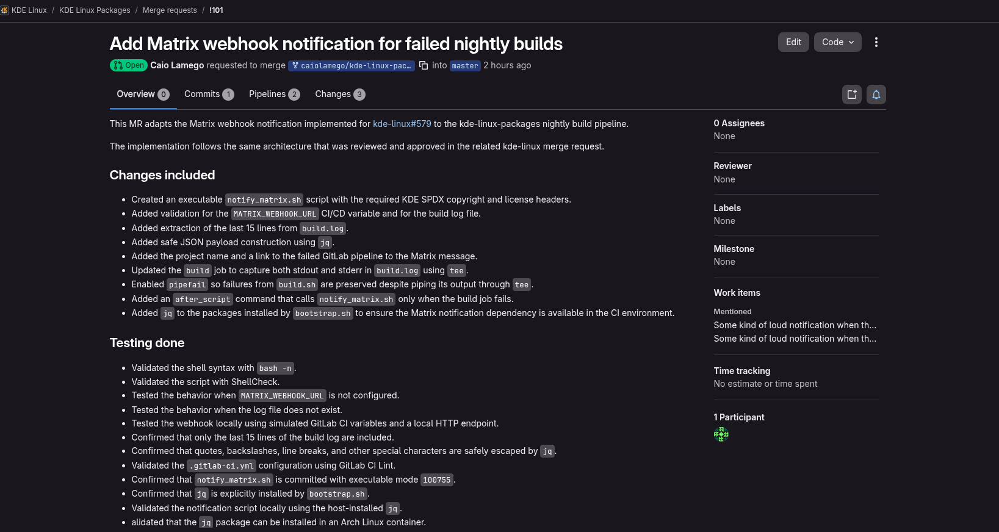
Link: Merge Request !101
ALém disso, o pipeline continuou passando corretamente, conforme previsto:
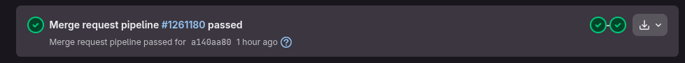
Maiores Avanços
- Primeira contribuição focada em CI/CD: Diferentemente da contribuição anterior, que estava relacionada à documentação, esta sprint envolveu a modificação direta do pipeline de integração contínua do projeto.
- Colaboração entre repositórios: A solução foi desenvolvida em conjunto com Diego, mantendo a padronização entre o
kde-linuxe okde-linux-packages. - Tratamento seguro de logs e segredos: A URL do webhook não foi inserida no código. Ela será fornecida por uma variável protegida do GitLab CI/CD.
- Integração com a comunidade: A implementação seguiu a arquitetura que já havia sido revisada pelos mantenedores na Issue #579.
Maiores Dificuldades
- Compreensão do comportamento de pipes no shell: Foi necessário compreender que o uso de
teepoderia esconder a falha do comando de build sem a configuraçãopipefail. - Validação do ambiente da CI: A imagem utilizada pela infraestrutura da KDE não pôde ser executada diretamente pelo Docker local, exigindo uma solução alternativa para garantir a instalação do
jq. - Adaptação entre repositórios: Apesar de as duas issues tratarem do mesmo problema, os arquivos e jobs dos pipelines eram diferentes, sendo necessário identificar corretamente onde aplicar a solução no
kde-linux-packages.
Aprendizados
- Alterações em CI/CD precisam ser testadas e revisadas com o mesmo cuidado de funcionalidades tradicionais.
- Aprendi como pipelines de comandos podem mascarar códigos de erro e como preservar corretamente uma falha ao utilizar
tee. - Reutilizar uma arquitetura já revisada reduz divergências, facilita o trabalho dos mantenedores e torna a solução mais consistente entre repositórios.
Plano Pessoal para a Próxima Sprint
- [ ] Acompanhar a pipeline e o processo de revisão do Merge Request !101.
- [ ] Responder aos comentários dos mantenedores e aplicar eventuais ajustes solicitados.
- [ ] Marcar as discussões como resolvidas após implementar as correções.
- [ ] Acompanhar a configuração da variável
MATRIX_WEBHOOK_URLno projeto oficial. - [ ] Registrar o resultado final do Merge Request, incluindo sua aprovação ou integração ao repositório.